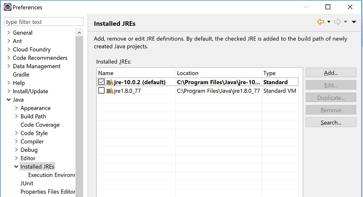
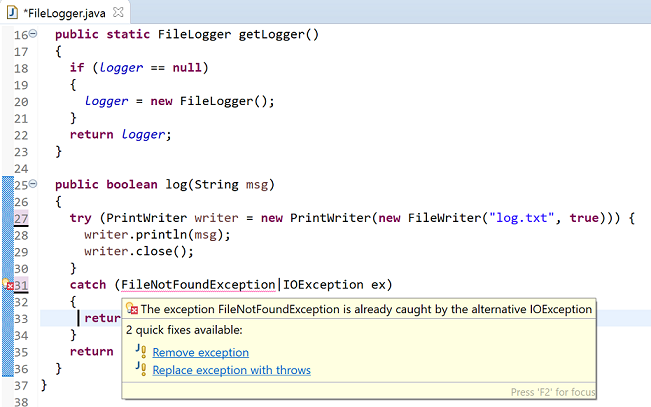

In the previous lab, you incorporated Maven into your pacemaker-console app. In this lab, we will bring in some of the new features from Java 7 onwards.
In this step, we will verify that our Eclipse settings for our latest version of pacemaker-console-maven are ok.
First make sure that your Eclipse project has Java10 on its build path. You can check it by selecting the following from the tool bar:
Window > Preferences > Java > Installed JREs

If JRE10 is not listed, add it.
With the Java Preferences open, check the Compiler settings. If the compiler compliance level is not set to 10, select this now and apply the settings (you may be asked if you want to do a full rebuild...you do!).
Open a new console window, navigate to the workspace folder for this project. Enter the following command to make sure that your project is building and testing successfully:
mvn testMaven should return with something similar to this, indicating that your project is compiling and also the tests are running:
[INFO] Results:
[INFO]
[INFO] Tests run: 20, Failures: 0, Errors: 0, Skipped: 0
[INFO]
[INFO] ------------------------------------------------------------------------
[INFO] BUILD SUCCESS
[INFO] ------------------------------------------------------------------------
[INFO] Total time: 6.939 s
[INFO] Finished at: 2018-10-09T12:15:00+01:00
[INFO] ------------------------------------------------------------------------We are going to implement try-with-resources and also multiple exceptions handling in this step.
In BinarySerializer.java, you will notice that we are using a try-catch block in both the read and write methods:
@SuppressWarnings("unchecked")
public void read() throws Exception
{
ObjectInputStream is = null;
try
{
is = new ObjectInputStream(new BufferedInputStream(new FileInputStream(file)));
stack = (Stack) is.readObject();
}
finally
{
if (is != null)
{
is.close();
}
}
}
public void write() throws Exception
{
ObjectOutputStream os = null;
try
{
os = new ObjectOutputStream(new BufferedOutputStream(new FileOutputStream(file)));
os.writeObject(stack);
}
finally
{
if (os != null)
{
os.close();
}
}
}
}Re-write this code to use the try-with-resources construct:
@SuppressWarnings("unchecked")
public void read() throws Exception
{
try (ObjectInputStream is = new ObjectInputStream(
new BufferedInputStream(
new FileInputStream(file)))){
stack = (Stack) is.readObject();
}
}
public void write() throws Exception
{
try (ObjectOutputStream os = new ObjectOutputStream(
new BufferedOutputStream(
new FileOutputStream(file)))) {
os.writeObject(stack);
}
}First, run the mvn install command to build, test, package and install your app.
Once that was successful, run the launch script that you wrote in the previous lab and make sure the binary loading and saving is working as expected.
As the XStream component does not implement the AutoClosable interface, we cannot use try-with-resources here. This is definitely a drawback of the XStream componment; we are really starting to see that component choice and the cadence of componenets can hamper the use of newer language constructs. If a component does not keep up to date with the new language constructs, it can become obsolete quite quickly.
Currently the log method in FileLogger.java is:
public boolean log(String msg)
{
try
{
PrintWriter writer = new PrintWriter(new FileWriter("log.txt", true));
writer.println(msg);
writer.close();
}
catch (FileNotFoundException ex)
{
return (false);
}
catch (IOException ex)
{
return (false);
}
return (true);
}We can use the try-with-resources approach here and also the multiple exception handling approach here. Make the following changes to the above method:
public boolean log(String msg)
{
try (PrintWriter writer = new PrintWriter(new FileWriter("log.txt", true))) {
writer.println(msg);
writer.close();
}
catch (FileNotFoundException|IOException ex)
{
return (false);
}
return (true);
}This will result in a compile error:

Remove the offending exception. Your method should now look like this:
public boolean log(String msg)
{
try (PrintWriter writer = new PrintWriter(new FileWriter("log.txt", true))) {
writer.println(msg);
writer.close();
}
catch (IOException ex)
{
return (false);
}
return (true);
}Already, you can see that the verbosity of your code is starting to reduce.
In this step, we will add a default method to our Serializer inferface and override it in our applicable serializer concrete classes.
Add the following default method to your Serializer interface:
default String serializerFormat() {
return "Serializer Format is...";
}Note: you can recompile the app at this stage and the interface update hasn't broken it.
Now, in the XMLSerializer.java, add the following method:
@Override
public String serializerFormat() {
return Serializer.super.serializerFormat() + "XML";
}Add a similar method in each of the other serializers...just replace XML with the actual serializer type.
Note: we can override default interface methods. Also note that our code will compile even if we don't provide an overriden implementation in each class that implements Serializer.
In Main.java, we will now provide an additional command, csf that will check the serializer format and print the current format to the shell.
@Command(description = "Current Serialization Format")
public void currentSerialisationFormat() {
System.out.println(paceApi.getSerializer().serializerFormat());
}This code will require the following getter in PacemakerAPI.java:
public Serializer getSerializer() {
return serializer;
}Save the changes and run mvn install followed by your launch.bat script.
When the shell appears, test the new csf command:
Welcome to pacemaker-console - ?help for instructions
pm> csf
Serializer Format is...Binary
pm>Before we start working on Java 8 Lambdas and Streams, we are first going to generate some test data in the console.
Create three new .script files in your route directory called:
In each of them, copy the following commands (please note that we only changed the User class to have UUID; the Activity and Location class still use Long, as this was part of the exercises):
newusers.script: this script will create 5 new users and assign a UUID
cu homer simpsom homer@simpson.com secret
cu marge simpson marge@simpson.com secret
cu maggie simpson maggie@simpson.com secret
cu maggie simpson maggie@simpson.com secret
cu lisa simpson lisa@simpson.com secretnewactivities.script: this script will add activities for two users; we will need to change the generated id before running this
aa 3b01194f-9140-44f0-941a-e1a69ac79315 walk fridge 1.0
aa 3b01194f-9140-44f0-941a-e1a69ac79315 walk bar 3.0
aa 3b01194f-9140-44f0-941a-e1a69ac79315 run work 2.2
aa 2cfc62ad-4ef7-4ca4-b323-90cf2a41b0b7 walk shop 2.5
aa 2cfc62ad-4ef7-4ca4-b323-90cf2a41b0b7 cycle shop 4.5newroutes.script: create a series of locations for two activites
al 2 23.3 32.3
al 2 23.3 32.5
al 2 23.3 32.6
al 3 11.3 2.3
al 3 3.3 2.5
al 3 33.3 13.6
al 3 13.3 15.3
al 3 53.3 52.5
al 3 43.3 44.4Delete any XML, JSON, etc datastore files that you have.
Change your app to serialise to either XML / JSON (something human readable!).
From the command line, launch your app.
Run the newusers.script by using the following command:
!rs newusers.scriptThis should create 5 new users...you can check this using the gu command.
Exit the app - this should persist your data to a datastore file.
Open this datastore file and copy the UUID from any two of the users you created.
Update the newactivities.script file with the two new UUIDs, replacing the existing UUIDs.
Restart the app and run the newactivities.script by using the following command:
!rs newactivities.scriptThen run the newroutes.script before exiting the app.
Re-open your datastore file and you should now have users, activities and locations store in it.
We are now ready to add some Java8 features!
For reference, if you are using XML serialisation, your test data should look something similar to this:
<object-stream>
<java.util.Stack serialization="custom">
<unserializable-parents/>
<vector>
<default>
<capacityIncrement>0</capacityIncrement>
<elementCount>3</elementCount>
<elementData>
<map>
<entry>
<string>77659618-256c-49da-a9dd-ec23821653d7</string>
<models.User>
<id>77659618-256c-49da-a9dd-ec23821653d7</id>
<firstName>maggie</firstName>
<lastName>simpson</lastName>
<email>maggie@simpson.com</email>
<password>secret</password>
<activities/>
</models.User>
</entry>
<entry>
<string>b982b4b3-3af7-4fee-b198-e633f8ea06e3</string>
<models.User>
<id>b982b4b3-3af7-4fee-b198-e633f8ea06e3</id>
<firstName>lisa</firstName>
<lastName>simpson</lastName>
<email>lisa@simpson.com</email>
<password>secret</password>
<activities>
<entry>
<long>0</long>
<models.Activity>
<id>0</id>
<type>walk</type>
<location>fridge</location>
<distance>1.0</distance>
<route/>
</models.Activity>
</entry>
<entry>
<long>1</long>
<models.Activity>
<id>1</id>
<type>walk</type>
<location>bar</location>
<distance>3.0</distance>
<route/>
</models.Activity>
</entry>
<entry>
<long>2</long>
<models.Activity>
<id>2</id>
<type>run</type>
<location>work</location>
<distance>2.2</distance>
<route>
<models.Location>
<id>0</id>
<latitude>23.3</latitude>
<longitude>32.3</longitude>
</models.Location>
<models.Location>
<id>1</id>
<latitude>23.3</latitude>
<longitude>32.5</longitude>
</models.Location>
<models.Location>
<id>2</id>
<latitude>23.3</latitude>
<longitude>32.6</longitude>
</models.Location>
</route>
</models.Activity>
</entry>
</activities>
</models.User>
</entry>
<entry>
<string>27c2cec4-85ed-4894-bfc8-4edbe56147cf</string>
<models.User>
<id>27c2cec4-85ed-4894-bfc8-4edbe56147cf</id>
<firstName>maggie</firstName>
<lastName>simpson</lastName>
<email>maggie@simpson.com</email>
<password>secret</password>
<activities/>
</models.User>
</entry>
<entry>
<string>d3eb5a9e-1f41-4bf2-a1df-e7892d3a7f6f</string>
<models.User>
<id>d3eb5a9e-1f41-4bf2-a1df-e7892d3a7f6f</id>
<firstName>homer</firstName>
<lastName>simpsom</lastName>
<email>homer@simpson.com</email>
<password>secret</password>
<activities/>
</models.User>
</entry>
<entry>
<string>784e4220-6081-4431-8e57-64ad7d92e287</string>
<models.User>
<id>784e4220-6081-4431-8e57-64ad7d92e287</id>
<firstName>marge</firstName>
<lastName>simpson</lastName>
<email>marge@simpson.com</email>
<password>secret</password>
<activities>
<entry>
<long>3</long>
<models.Activity>
<id>3</id>
<type>walk</type>
<location>shop</location>
<distance>2.5</distance>
<route>
<models.Location>
<id>3</id>
<latitude>11.3</latitude>
<longitude>2.3</longitude>
</models.Location>
<models.Location>
<id>4</id>
<latitude>3.3</latitude>
<longitude>2.5</longitude>
</models.Location>
<models.Location>
<id>5</id>
<latitude>33.3</latitude>
<longitude>13.6</longitude>
</models.Location>
<models.Location>
<id>6</id>
<latitude>13.3</latitude>
<longitude>15.3</longitude>
</models.Location>
<models.Location>
<id>7</id>
<latitude>53.3</latitude>
<longitude>52.5</longitude>
</models.Location>
<models.Location>
<id>8</id>
<latitude>43.3</latitude>
<longitude>44.4</longitude>
</models.Location>
</route>
</models.Activity>
</entry>
<entry>
<long>4</long>
<models.Activity>
<id>4</id>
<type>cycle</type>
<location>shop</location>
<distance>4.5</distance>
<route/>
</models.Activity>
</entry>
</activities>
</models.User>
</entry>
</map>
<map>
<entry>
<string>homer@simpson.com</string>
<models.User reference="../../../map/entry[4]/models.User"/>
</entry>
<entry>
<string>lisa@simpson.com</string>
<models.User reference="../../../map/entry[2]/models.User"/>
</entry>
<entry>
<string>marge@simpson.com</string>
<models.User reference="../../../map/entry[5]/models.User"/>
</entry>
<entry>
<string>maggie@simpson.com</string>
<models.User reference="../../../map/entry[3]/models.User"/>
</entry>
</map>
<map>
<entry>
<long>0</long>
<models.Activity reference="../../../map/entry[2]/models.User/activities/entry/models.Activity"/>
</entry>
<entry>
<long>1</long>
<models.Activity reference="../../../map/entry[2]/models.User/activities/entry[2]/models.Activity"/>
</entry>
<entry>
<long>2</long>
<models.Activity reference="../../../map/entry[2]/models.User/activities/entry[3]/models.Activity"/>
</entry>
<entry>
<long>3</long>
<models.Activity reference="../../../map/entry[5]/models.User/activities/entry/models.Activity"/>
</entry>
<entry>
<long>4</long>
<models.Activity reference="../../../map/entry[5]/models.User/activities/entry[2]/models.Activity"/>
</entry>
</map>
<null/>
<null/>
<null/>
<null/>
<null/>
<null/>
<null/>
</elementData>
</default>
</vector>
</java.util.Stack>
</object-stream>We will now add a new feature that will utilise both Lambdas and Streams to perform processing on the User collection.
We are going to write a report that will print out the "active" users to the console. Our code will assume that an active user is one that has activities added.
Add the following code to Main.java:
@Command(description = "Report active users")
public void reportActiveUsers() {
List<User> userList = new ArrayList<User> (paceApi.getUsers());
List<User> activeUsers = userList
.stream()
.filter(p -> p.activities.isEmpty() == false)
.collect(Collectors.toList());
System.out.println(activeUsers);
}This code will create a new command, rau, that will print our all users whose 'activities' collection is not empty. This code uses a lambda expression with streams.
When you run this code, you will get the following output:
pm> rau
[User{lisa, simpson, lisa@simpson.com, secret, {0=Activity{0, walk, fridge, 1.0, []}, 1=Activity{1, walk, bar, 3.0, []}, 2=Activity{2, run, work, 2.2, [Location{0, 23.3, 32.3}, Location{1, 23.3, 32.5}, Location{2, 23.3, 32.6}]}}}, User{marge, simpson, marge@simpson.com, secret, {3=Activity{3, walk, shop, 2.5, [Location{3, 11.3, 2.3}, Location{4, 3.3, 2.5}, Location{5, 33.3, 13.6}, Location{6, 13.3, 15.3}, Location{7, 53.3, 52.5}, Location{8, 43.3, 44.4}]}, 4=Activity{4, cycle, shop, 4.5, []}}}]Let's refactor the code to reduce the lines of code, then we can work on the console output.
Change the code to be one statement; note there will be no change in the output format (verify this by running the app):
@Command(description = "Report active users")
public void reportActiveUsers() {
System.out.println(paceApi.getUsers()
.stream()
.filter(p -> p.activities.isEmpty() == false)
.collect(Collectors.toList())
);
}Now lets work on the console output. Using the ASCII table code from the gu command, refactor the method to be:
@Command(description = "Report active users")
public void reportActiveUsers() {
IASCIITableAware asciiTableAware = new CollectionASCIITableAware<User>(
paceApi.getUsers()
.stream()
.filter(p -> p.activities.isEmpty() == false)
.collect(Collectors.toList()),
"firstname", "lastname", "email", "activities");
ASCIITable.getInstance().printTable(asciiTableAware);
}Our output will look like this:
pm> rau
+-----------+----------+-------------------+----------------+
| FIRSTNAME | LASTNAME | EMAIL | ACTIVITIES |
+-----------+----------+-------------------+----------------+
| lisa | simpson | lisa@simpson.com | null |
| marge | simpson | marge@simpson.com | null |
+-----------+----------+-------------------+----------------+Note that you probably have a null in the activites column. This is appearing because you don't have an accessor in the User class for the activities property. Add this accessor in User:
public Map<Long, Activity> getActivities() {
return activities;
}Now rerun the command and your output will look something like this mess:
+-----------+----------+-------------------+----------------------------------------------------------------------------------------------------------------------------------------------------------------------------------------------------------------------------+
| FIRSTNAME | LASTNAME | EMAIL | ACTIVITIES |
+-----------+----------+-------------------+----------------------------------------------------------------------------------------------------------------------------------------------------------------------------------------------------------------------------+
| lisa | simpson | lisa@simpson.com | {0=Activity{0, walk, fridge, 1.0, []}, 1=Activity{1, walk, bar, 3.0, []}, 2=Activity{2, run, work, 2.2, [Location{0, 23.3, 32.3}, Location{1, 23.3, 32.5}, Location{2, 23.3, 32.6}]}} |
| marge | simpson | marge@simpson.com | {3=Activity{3, walk, shop, 2.5, [Location{3, 11.3, 2.3}, Location{4, 3.3, 2.5}, Location{5, 33.3, 13.6}, Location{6, 13.3, 15.3}, Location{7, 53.3, 52.5}, Location{8, 43.3, 44.4}]}, 4=Activity{4, cycle, shop, 4.5, []}} |
+-----------+----------+-------------------+----------------------------------------------------------------------------------------------------------------------------------------------------------------------------------------------------------------------------+We definitely need to fix this!!! Maybe it would be better if we just printed the number of activities instead of the actual activities?
To do this, add the following accessor into the User class:
public int getActivitiessize() {
return activities.size();
}Now make the following change to the reporting method...just change activities to activitiessize:
public void reportActiveUsers() {
IASCIITableAware asciiTableAware = new CollectionASCIITableAware<User>(
paceApi.getUsers()
.stream()
.filter(p -> p.activities.isEmpty() == false)
.collect(Collectors.toList()),
"firstname", "lastname", "email", "activitiessize");
ASCIITable.getInstance().printTable(asciiTableAware);
}Rerun and you should have this output:
+-----------+----------+-------------------+----------------+
| FIRSTNAME | LASTNAME | EMAIL | ACTIVITIESSIZE |
+-----------+----------+-------------------+----------------+
| lisa | simpson | lisa@simpson.com | 3 |
| marge | simpson | marge@simpson.com | 2 |
+-----------+----------+-------------------+----------------+The column heading ACTIVITIESSIZE is not great...it would be better if it said, NUMBER OF ACTIVITIES. Make the following code changes to the reporting method:
@Command(description = "Report active users")
public void reportActiveUsers() {
IASCIITableAware asciiTableAware =
//data for the table
new CollectionASCIITableAware<User>(
paceApi.getUsers()
.stream()
.filter(p -> p.activities.isEmpty() == false)
.collect(Collectors.toList()),
//properties to read (using getter methods)
Arrays.asList("firstname", "lastname", "email", "activitiessize"),
//custom headers for the table
Arrays.asList("First Name", "LastName", "Email", "Number of Activities"));
ASCIITable.getInstance().printTable(asciiTableAware);
}Now rerun and you should have the following output:
+------------+----------+-------------------+----------------------+
| FIRST NAME | LASTNAME | EMAIL | NUMBER OF ACTIVITIES |
+------------+----------+-------------------+----------------------+
| lisa | simpson | lisa@simpson.com | 3 |
| marge | simpson | marge@simpson.com | 2 |
+------------+----------+-------------------+----------------------+You have now used Lambdas and Streams in this new command.
We will use the new collection factory methods in our new command, Report Active Users.
Currently the report active users method looks like this:
@Command(description = "Report active users")
public void reportActiveUsers() {
IASCIITableAware asciiTableAware =
//data for the table
new CollectionASCIITableAware<User>(
paceApi.getUsers()
.stream()
.filter(p -> p.activities.isEmpty() == false)
.collect(Collectors.toList()),
//properties to read (using getter methods)
Arrays.asList("firstname", "lastname", "email", "activitiessize"),
//custom headers for the table
Arrays.asList("First Name", "LastName", "Email", "Number of Activities"));
ASCIITable.getInstance().printTable(asciiTableAware);
}Change the Arrays.asList to the new factory method List.of:
@Command(description = "Report active users")
public void reportActiveUsers() {
IASCIITableAware asciiTableAware =
//data for the table
new CollectionASCIITableAware<User>(
paceApi.getUsers()
.stream()
.filter(p -> p.activities.isEmpty() == false)
.collect(Collectors.toList()),
//properties to read (using getter methods)
List.of("firstname", "lastname", "email", "activitiessize"),
//custom headers for the table
List.of("First Name", "Last Name", "Email", "Number of Activities"));
ASCIITable.getInstance().printTable(asciiTableAware);
}Use maven to install these changes and re-test the app. There should be no noticable changes to at console level:
+------------+-----------+-------------------+----------------------+
| FIRST NAME | LAST NAME | EMAIL | NUMBER OF ACTIVITIES |
+------------+-----------+-------------------+----------------------+
| lisa | simpson | lisa@simpson.com | 3 |
| marge | simpson | marge@simpson.com | 2 |
+------------+-----------+-------------------+----------------------+Now that we have a new getActivities() method in the User class, we can replace this line of code:
.filter(p -> p.activities.isEmpty() == false)with this:
.filter(p -> !p.getActivities().isEmpty())It makes it slightly more readable!
This is the last change that we will make. We will use the new identifier var.
A new identifier named var is now available for local variables with non-null initializers. Using this identifier, the type of the variable is inferred from the context.
Returning to our new command, report active users, change the declaration of the asciiTableAware variable like this:
@Command(description = "Report active users")
public void reportActiveUsers() {
var asciiTableAware =
//data for the table
new CollectionASCIITableAware<User>(
paceApi.getUsers()
.stream()
.filter(p -> !p.getActivities().isEmpty())
.collect(Collectors.toList()),
//properties to read (using getter methods)
List.of("firstname", "lastname", "email", "activitiessize"),
//custom headers for the table
List.of("First Name", "Last Name", "Email", "Number of Activities"));
ASCIITable.getInstance().printTable(asciiTableAware);
}Now refactor all local variables in Main.java to be var.
As you replace the variable declaration with var, you will notice that your IDE starts highlighting import statements that are no longer required. Remove these import statements. Your code should look less verbose now with the use of var.
Your Main.java will look something like this:
package controllers;
import java.io.File;
import java.util.ArrayList;
import java.util.List;
import java.util.stream.Collectors;
import com.bethecoder.ascii_table.ASCIITable;
import com.bethecoder.ascii_table.impl.CollectionASCIITableAware;
import com.google.common.base.Optional;
import asg.cliche.Command;
import asg.cliche.Param;
import asg.cliche.ShellFactory;
import models.User;
import utils.XMLSerializer;
public class Main {
PacemakerAPI paceApi;
public Main() throws Exception
{
//XML Serializer
var datastore = new File("datastore.xml");
var serializer = new XMLSerializer(datastore);
//JSON Serializer
//File datastore = new File("datastore.json");
//Serializer serializer = new JSONSerializer(datastore);
//Binary Serializer
//File datastore = new File("datastore.txt");
//Serializer serializer = new BinarySerializer(datastore);
paceApi = new PacemakerAPI(serializer);
if (datastore.isFile())
{
paceApi.load();
}
}
@Command(description = "Create a new User")
public void createUser(@Param(name = "first name") String firstName, @Param(name = "last name") String lastName,
@Param(name = "email") String email, @Param(name = "password") String password) {
paceApi.createUser(firstName, lastName, email, password);
}
@Command(description = "Get a Users details")
public void getUser(@Param(name = "email") String email) {
var user = paceApi.getUserByEmail(email);
System.out.println(user);
}
@Command(description="Get all users details")
public void getUsers ()
{
var userList = new ArrayList<User> (paceApi.getUsers());
var asciiTableAware = new CollectionASCIITableAware<User>(userList, "firstname", "lastname", "email");
ASCIITable.getInstance().printTable(asciiTableAware);
}
@Command(description = "Delete a User")
public void deleteUser(@Param(name = "email") String email) {
var user = Optional.fromNullable(paceApi.getUserByEmail(email));
if (user.isPresent()) {
paceApi.deleteUser(user.get().id);
}
}
@Command(description = "Add an activity")
public void addActivity(@Param(name = "user-id") String id, @Param(name = "type") String type,
@Param(name = "location") String location, @Param(name = "distance") double distance) {
var user = Optional.fromNullable(paceApi.getUser(id));
if (user.isPresent()) {
paceApi.createActivity(id, type, location, distance);
}
}
@Command(description = "Add Location to an activity")
public void addLocation(@Param(name = "activity-id") Long id, @Param(name = "latitude") float latitude,
@Param(name = "longitude") float longitude) {
var activity = Optional.fromNullable(paceApi.getActivity(id));
if (activity.isPresent()) {
paceApi.addLocation(activity.get().id, latitude, longitude);
}
}
@Command(description = "Current Serialization Format")
public void currentSerialisationFormat() {
System.out.println(paceApi.getSerializer().serializerFormat());
}
@Command(description = "Report active users")
public void reportActiveUsers() {
var asciiTableAware =
//data for the table
new CollectionASCIITableAware<User>(
paceApi.getUsers()
.stream()
.filter(p -> !p.getActivities().isEmpty())
.collect(Collectors.toList()),
//properties to read (using getter methods)
List.of("firstname", "lastname", "email", "activitiessize"),
//custom headers for the table
List.of("First Name", "Last Name", "Email", "Number of Activities"));
ASCIITable.getInstance().printTable(asciiTableAware);
}
public static void main(String[] args) throws Exception {
var main = new Main();
var shell = ShellFactory.createConsoleShell("pm", "Welcome to pacemaker-console - ?help for instructions", main);
shell.commandLoop();
main.paceApi.store();
}
}Now run mvn install and also re-test your app from the console to make sure all is ok.
Refactor all the local variables in src/main/java to use var. Notice how handy the JUnit tests are during this refactoring process!
As an exercise:
try changing one of the attributes in your model classes to var (e.g. userIndex HashMap). An error message will be generated. var is only applicable to local variables.
try changing a local variable that has been initialised to null. This will also generate a syntax error. The type cannot be inferred in this case, so the compiler will not allow it.
The complete maven project so far:
The purpose of the previous steps was to incorporate some Java 7-10 capabilities into the source code for the maven build of pacemaker-console-maven.
You are now in a position to refactor your pacemaker tests to include Java 7-10 capabilities, should you wish to do so.
Consider updating your assignment work completed to-date with Java 7-10 capabilities, in particular for the sorting. Use of Streams and Lambdas in particular would be a nice addition to your assignment.